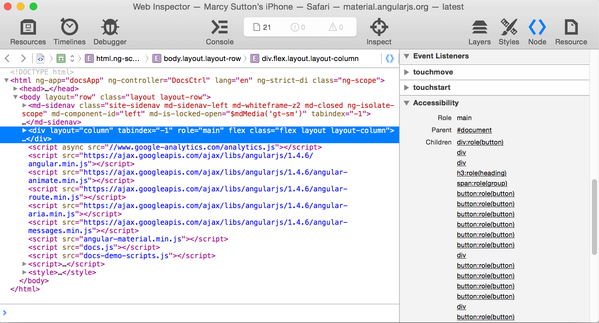

How to win at Mobile Accessibility
Background image: people around the world using mobile devices
Winning
How to combine…?
How to Win at Mobile Accessibility
By Marcy Sutton
Accessibility Engineer at Adobe, Angular.js Core Member
We’ll talk about:
- Barriers
- UI Patterns
- State of Tooling
Mobile++

New York Times: A 21st century migrant's checklist. Water, Shelter, Smartphone.
Accessibility
15-20% of the population
- Vision
- Hearing
- Motor/Physical
- Cognitive
Icons by the Noun Project
Why should I bother?
- Sales potential
- Legal risk
- Innovation opportunity
- It’s the right thing to do
Icons by the Noun Project
Develop for future you
Mobile Platform Usage in Accessibility

“Do you use a mobile screen reader more than a desktop screen reader?”

| Response | # of Respondents | % of Respondents |
|---|---|---|
| No | 753 | 56% |
| About the same | 432 | 32% |
| Yes | 160 | 12% |
iOS Accessibility Features
- Voiceover
- Dictation
- Zoom
- Invert colors/grayscale
- Switch control
Android Accessibility Features
- TalkBack
- Switch access
- Braille support
- High contrast
- Magnification
Mobile Contexts
- Native
- Hybrid
- Mobile web
Accessibility is easier to get right on native platforms.
¯\_(ツ)_/¯
Mobile web accessibility
Come at me Bro
Barriers
to Access
Locked-down zoom,
Hijacked scrolling
…we all know these techniques exist.
Text is too small


Visual clutter
Ambiguous visual icons
Check your privilege, age, ability, demographic...
Conflicting gestures
Other UI affordances needed
Fragmentation
#realtalk
Spotty HTML5/ARIA Support
Mobile is less mature than desktop
Plus X assistive tech devices
and user settings

Winning?
Kid dancing is a winner
Mobile UI Patterns
How to Win
You’re competing…

BBC Mobile Accessibility Guidelines

Use buttons*

Label buttons and controls
Touch targets

Crafting mobile tab order
Hidden links shouldn't be reachable
Angular Material dialog: Before
Hiding content from screen readers
(One technique)
<div style="display: none;">Fully hide any element, but it’s not animatable.
Disabling interactive elements in HTML
(Another technique)
<div aria-hidden="true">
<button tabindex="-1">Alert</button>
</div>
Keep content visible, but hide from a screen reader.
Inert: disabling the background
function walkDOM(element) {
while (element.parentNode) {
if (element === document.body) {
return;
}
var children = element.parentNode.children;
for (var i = 0; i < children.length; i++) {
// skip over child if it is an ascendant of the dialog
if (element !== children[i]) {
children[i].setAttribute('aria-hidden', isHidden);
}
}
walkDOM(element = element.parentNode);
}
}
Protip: Insert dialog next to <body>, and you don’t need this much code
Content properly disabled
Angular Material dialog: After
State of Tooling
What We Want
- Mobile browser testing tools
- Screen reader testing tools
PowerMapper Screen Reader Compatibility Matrix
iOS Safari with
Accessibility Node Inspector

Safari Accessibility Audit?
aXe Audit in Firefox Devtools
Not really checking mobile devices…yet
Firefox WebIDE

Firefox WebIDE: Add-ons?

Chrome for Android

Chrome Device Inspect

Chrome Accessibility Developer Tools +
Android Tethering
…except mobile Chrome isn't popular for accessibility
Let’s Recap
- Accessibility is important
- We need mobile testing tools
- Use semantics
- Optimize for humans
- Craft source & tab order
- Keep pushing
Thanks!